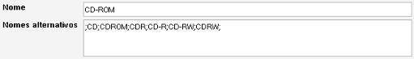

Formulário de item para itens de propriedade
Caminho de menu: > Ficheiro > Novo (Ctrl-N)
O formulário de item mostra um único item, novo ou existente. O formulário permite-lhe criar, atualizar ou apagar um item.
A função geral do formulário de item é explicada aqui. Este pequeno
capítulo cobre a descrição de um campo em particular, o campo Nomes alternativos. Este campo só está
disponível para campos de propriedade.

No exemplo acima criei um meio de armazenamento chamado "CD-ROM". Agora, de fontes externas, como serviços online,
vou obter todo o tipo de valores diferentes. A Amazon.com pode chamar-lhe CDROM ou CD por exemplo. Para mapear estes valores
nesta propriedade introduzem-se os valores no campo Nomes alternativos.
Os valores têm de ser separados por ponto e vírgula (;). No exemplo acima defini os seguintes nomes alternativos:
;CD;CDROM;CDR;CD-R;CD-RW;CDRW;
Como pode ver, a lista começa e acaba com ponto e vírgula. Com a informação acima, o Data Crow vai
fazer coincidir todos os valores com o item "CD-ROM" que eu criei, mantendo a lista condensada.